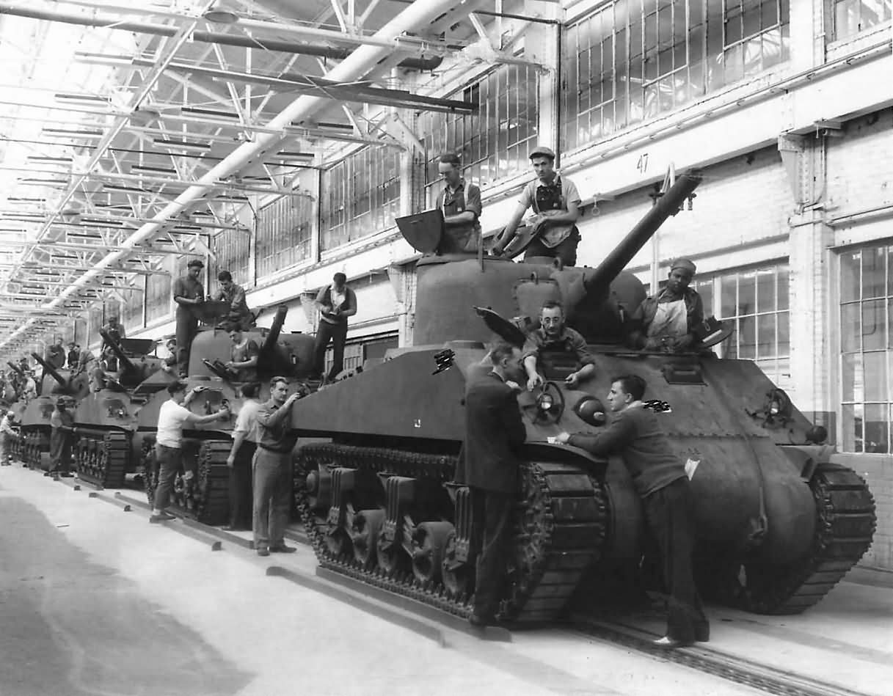

What WWII Tank Are You?
Answer The Questions To Find Out What Kind of WWII Tank You Are

The M4 Sherman, officially Medium Tank, M4, was the most widely used medium tank by the United States and Western Allies in World War II. The M4 Sherman proved to be reliable, relatively cheap to produce, and available in great numbers. It was also the basis of several other armored fighting vehicles including self-propelled artillery, tank destroyers, and recovery vehicles. Tens of thousands were distributed through the Lend-Lease program to the British Commonwealth and Soviet Union. The tank was named by the British for the American Civil War general William Tecumseh Sherman.
The T-34 was the mainstay of Soviet armoured forces throughout the war. Its general specifications remained nearly unchanged until early 1944, when it received a firepower upgrade with the introduction of the greatly improved T-34-85 variant. Its production method was continuously refined and rationalized to meet the needs of the Eastern Front, making the T-34 quicker and cheaper to produce. The Soviets ultimately built over 80,000 T-34s of all variants, allowing steadily greater numbers to be fielded despite the loss of tens of thousands in combat against the German Wehrmacht.
The Tiger II was the successor to the Tiger I, combining the latter's thick armour with the armour sloping used on the Panther medium tank. The tank weighed almost 70 tonnes, and was protected by 100 to 185 mm (3.9 to 7.3 in) of armour to the front. It was armed with the long barrelled 8.8 cm KwK 43 L/71 anti-tank cannon. It was known as King Tiger by Allied soldiers, and is also known under the informal name Königstiger. The final official German designation was Panzerkampfwagen Tiger Ausf. B
The Tank, Infantry, Mk IV (A22) Churchill was a British infantry tank. The origins of the Churchill's design lay in the expectation that war in Europe might well be fought in conditions similar to those of the First World War, and thus emphasised the ability to cross difficult ground. The Churchill was hurried into production in order to build up British defences against a possible German invasion. The Churchill was used by British and other Commonwealth forces during the North African, Italian and North-West Europe campaigns. In addition, 344 Churchills were sent as military aid to the Soviet Union.
The Char B1 was a specialised break-through vehicle, originally conceived as a self-propelled gun with a 75 mm howitzer in the hull; later a 47 mm gun in a turret was added, to allow it to function also as a Char de Bataille, a "battle tank". Among the most powerfully armed and armoured tanks of its day, the type was very effective in direct confrontations with German armour in 1940 during the Battle of France, but slow speed and high fuel consumption made it ill-adapted to the war of movement then being fought.
The IS-2 was the second iteration of the IS series tanks The IS acronym is the anglicized initialism of Joseph Stalin (Ио́сиф Ста́лин, Iosif Stalin). The IS-2 was equipped with the 122mm D-25T cannon which was designed to be able to defeat any tank the Germans had, even a King Tiger. The IS-2 entered the war in 1944 and was the most formidable tank fielded by the Soviet Union, however it had several design flaws the most notable being the loading mechanism for the 122mm main gun which allowed for a maximum rate of fire of only 2-4 rounds per minute.
The Bob Semple tank was a tank designed by New Zealand Minister of Works Bob Semple during World War II. Originating out of the need to build military hardware from available materials, the tank was built from corrugated iron on a tractor base. Designed and built during a period of uncertainty in which New Zealand feared having to defend itself from Japanese invasion without external assistance, these tanks were a civilian effort to design and create a means to protect New Zealand. Designed and built without formal plans or blueprints, it had numerous design flaws and practical difficulties, and was never put into mass production or used in combat.
Check Out: Program-O-Suggest-O or The Cheese Quiz